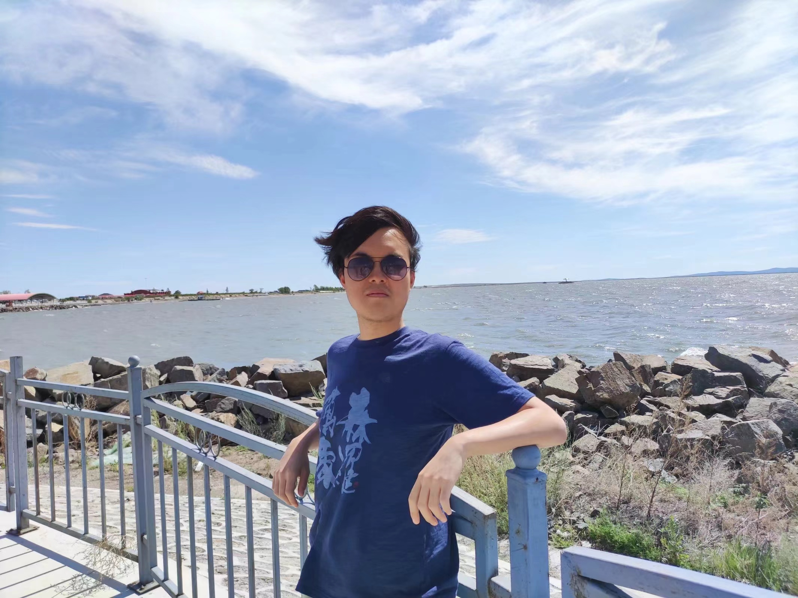

Haosheng Zhou

PhD student
Department of Statistics & Applied Probability
University of California, Santa Barbara
Santa Barbara, CA 93106, USA
Email: hzhou593@ucsb.edu
Check my CV here.
Educational Experience:
- Master Degree in Mathematics, Courant Institue of Mathematical Sciences, New York University
- Bachelor Degree in Data Science with a concentration in Internet Finance, School of EECS, Peking University
Teaching Experience:
Research Interests:
- I have a wide interest in applied Probability and statistics field, including
mathematical finance, numerical optimization and data science etc. I am currently
open to any kinds of reasearch and intern opportunities in the relevant fields, please
feel free to contact me!
Publications:
- Detecting Boolean Asymmetric Relationships with a Loop
Counting Technique and its Implications for Analyzing
Heterogeneity within Gene Expression Datasets, with A.V. Rangan, W. Lin, S.R. Labra, S.A. Lipton, N.J. Schork
Master Thesis, preprint ready on bioRxiv, to be submitted soon
- Approximation Algorithms and PTAS of the Minimum Dominating Set
and the 3-Path Vertex Cover Problem on Unit Disk Graphs, with J. Tu, Y. Kong
Bachelor Thesis, not to be published
Other Resources: